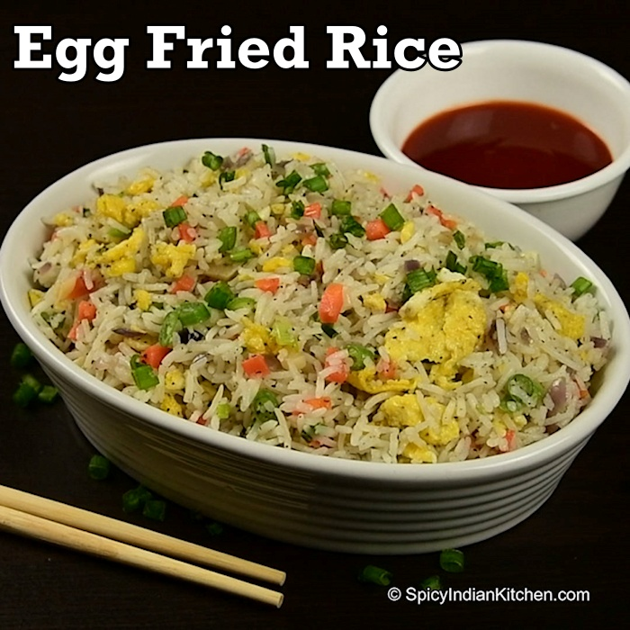

Ingredients
- 2 cups cooked rice (preferably cold rice)
- 2 eggs
- 1 onion (finely chopped)
- 1 tomato (optional)
- 1 green chili
- 1 tsp ginger-garlic paste
- 1/2 tsp turmeric
- 1 tsp red chili powder
- 1/2 tsp garam masala
- Salt
- Oil or butter
- Spring onion/coriander for garnish
Steps
- Heat oil in a pan
- Add onion and chili. Cook until golden.
- Add ginger-garlic paste and tomato. Cook till soft.
- Add turmeric, chili powder, garam masala, and salt.
- Push everything to one side and crack the eggs in. Scramble them.
- Add rice and mix well on high heat for 2-3 minutes.
- Garnish with coriander or spring onion.
Optional Upgrade
- Add soy sauce for Indo-Chinese flavor.
- Toss in capsicum, carrot, or leftover chicken.
- Add a fried egg on top if you want restaurant energy at home.